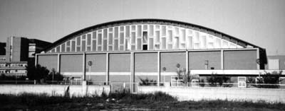

the Italian Gathering: 1997 | 1998
 |
|---|
Demo party in Italia?Si, l'ig97 sarà il primo demo party italiano, con le compos, i premi, la musica, le conference, ecc. Visto il successo dell'anno scorso (ig96 web) abbiamo deciso di organizzare una manifestazione dai toni più elevati. Anche se l'obiettivo principale è rimasto quello di riunire tutti gli "smanettoni" italiani in un unico luogo, abbiamo deciso di ampliare l'evento trasformandolo in un party.Le compos del party sono suddivise nelle seguenti categorie per Pc e Amiga: Demo, Intro, Mod, Picture. Per partecipare alle competizioni è sufficiente riempire il modulo d'iscizione e presentarsi al party con i lavori registrati su floppy. Se avete problemi per venire al party (mi riferisco a chi è fuori Italia) potete partecipare lo stesso, basta che riempiate il modulo d'iscrizione inviando i lavori in attachment (vedi istruzioni). Per poter coinvolgere più interessi abbiamo ampliato la manifestazione con delle piccole conference e dibattiti legati a temi d'informatica amatoriale come la telematica, il networking, la programmazione, ecc (vedi conference). In particolare metteremo a disposizione dei terminali collegati in rete Internet per delle sessioni libere. Oltre agli appuntamenti "tecnici" abbiamo organizzato anche delle sezioni musicali con dj su temi techno/noise legati al mondo del digitale, abbiamo invitato anche dei gruppi che suoneranno dal vivo, i PCUS e i Modra Stjerne. Insomma abbiamo deciso di spremere al massimo le nostre possibilità organizzative sperando di trovare una risposta nel pubblico ma soprattutto di iniziare a diffondere in Italia della tecnocultura senza scopi di lucro. |
Il programma del party |
Sabato 6 Settembre 1997Ore 10.00 Inizio manifestazione Ore 14:00 Dead-Line consegna compos Ore 17:00 Inizio conference (Link per informazioni) Ore 20:00 Esibizione dei P.C.U.S. Ore 21:00 Proiezione compos su maxi-schermo + Premiazione Ore 24:00 Concerto dei Modra Stjerne + Dj Horobi/Fra Ore 10:00 Fine del party... |
Come arrivare all'ig97?Il party si terrà presso il palazzetto dello sport di Via Rigopiano (nei pressi dell'ospedale) a Pescara.Ecco alcune foto della struttura: |
  |
|
Per tutti coloro che arriveranno in treno una buona notizia: il palazzetto è facilmente raggiungibile dalla stazione, solo 250 metri di distanza. La strada più breve per arrivare al Party, partendo dalla stazione, è quella che passa per Via Aremogna (una piccola via con un breve tratto in salita), via Passo Lanciano (dove si trova la sede delle Poste/Telecomunicazioni) ed infine via Rigopiano (direzione ospedale). |
|
[Home Page- Compos- Iscrizione- Conference- Staff- Gallery/Links] |
|
NoCopyright 1997 web design: cerin0@hotmail.com Si ringrazia: Arci Nuova Associazione Pescara Metro Olografix Association Comune di Pescara |